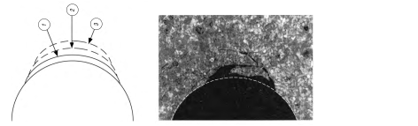

Next: 7.3 Hydraulic fracture design: Up: 7. Hydraulic fracturing Previous: 7.1 Fluid-driven fractures in Contents
Understanding of hydraulic fractures is important for several applications in petroleum and geosystems engineering, from drilling and completion to enhanced oil recovery.
The leak-off test is conducted to measure the fracture gradient required for setting maximum mud pressure for drilling. The test is conducted with drilling mud after cementing the casing of the previous section on an open-hole.
 ). A change of slope may occur before FBP indicating a change of cavity volume, known as leak-off point (LOP).
). A change of slope may occur before FBP indicating a change of cavity volume, known as leak-off point (LOP).
This example uses another notation for the leak-off point and fracture breakdown pressure. Some studies suggest that a deviation from linearity at the beggining of the test indicates the opening of a small fracture (FIP) until it reaches a maximum pressure (UFP) after which it propagates at a rate faster than the injected fluid. An “extended” leak-off test requires to reach the UFP (or FPP) pressure. Sometimes the leak-off tests may be stopped before UFP to avoid fracturing the well.
The shut in pressure is the maximum pressure before the pressure signature exhibits a gradual decay as a function of time.
Fluid in the fracture leaks off from the wellbore and the fracture while the fracture is still open. Large leak-off surface causes a rapid pressure decrease approximately proportional to the
 (: time after shut-in). The pressure decrease rate slows down once the fracture closes (leak-off just from well) and departs from the  -
linear trend. The fracture closure pressure is the pressure at which this change in leak-off regime occurs.
-
linear trend. The fracture closure pressure is the pressure at which this change in leak-off regime occurs.
Fracture closure is interpreted as approximately equal to the minimum principal stress.
Objective: Determine permeability, pore pressure, and minimum principal stress  .
.
 bbl with fracturing fluid.
bbl with fracturing fluid.
 0.1 to 3 bbl/min.
0.1 to 3 bbl/min.
The mechanics of the DFIT test is similar to the one of the leak-off test. The determination of FCP is similar to that of the leak-off test.
More advanced methods use a G-function to determine FCP. G-function: dimensionless time function designed to linearize the pressure signal during normal fluid leak-off from a bi-wing fracture.
The step rate test helps determine the maximum injection pressure in a wellbore designed for constant and long-term injection.
Examples of injected fluids include water (liquid or vapor), CO , N, polymer mixtures, foam, natural gas, produced water, among others.
The objective is to determine the: maximum surface injection pressure known as formation parting pressure.
, N, polymer mixtures, foam, natural gas, produced water, among others.
The objective is to determine the: maximum surface injection pressure known as formation parting pressure.
The Procedure of the step-rate test is the following (See Figure ![[*]](crossref.png) ):
):
Each injection step is performed until the pressure signal approaches an asymptotic response (top and middle figures). This maximum pressure at each step is then plotted as a function of injection rate.
The change in slope in the - plot (bottom) determines the formation parting pressure (FPP) and the formation parting rate (FPR).
The change of slope occurs due to fracturing of the injector and can be interpreted as a change of the skin factor ( means damage and
plot (bottom) determines the formation parting pressure (FPP) and the formation parting rate (FPR).
The change of slope occurs due to fracturing of the injector and can be interpreted as a change of the skin factor ( means damage and  means stimulation) in the wellbore equation
means stimulation) in the wellbore equation
| (7.1) |
Figure shows an example of a step rate test conducted with steam.
The step-rate test is required test by some regulatory agencies in order to safely dispose produced water.
The objective is to avoid fracturing of the injector.
There is no regulation so far for injection of large volumes that may not fracture the injector but could reactivate neighboring faults.
![\includegraphics[scale=0.65]{.././Figures/split/9A-10.pdf}](img929.svg) |
Unintentional fracturing of the injector can be detrimental to sweep efficiency in EOR and IOR if the fracture connects the injectors and producers. On the other hand, fractures can be beneficial for sweep efficiency if oriented perpendicular to the direction of sweep.
![\includegraphics[scale=0.55]{.././Figures/split/9-FracturesEOR.PNG}](img930.svg) |